Salo
Cinturón blanco

el podcast
Una conversación relajada, grabada en el tatami y con kimono. Sin cambios de ropa ni transiciones: nos sentamos a hablar de lo que pasa fuera del tatami.
¿Cómo se aplica el jiu-jitsu en tu trabajo y en tu vida?
Cada invitado nos cuenta qué se llevó del tatami a su trabajo y a su vida. Te esperamos cada 15 días en Spotify y YouTube, y con los mejores momentos en nuestras redes.
Cinturón blanco
Cinturón negro
dale play
Escúchalo mientras entrenas, manejas o trabajas, o míralo en video. Cada episodio nuevo aparece aquí.
Jiu-ji Podcast en Spotify
Jiu-ji Podcast en YouTube
para marcas
Jiu-ji Podcast habla con gente que entrena jiu-jitsu y lo lleva a su trabajo y a su vida. Si tu marca le habla a esa comunidad, conversemos.
Personas que practican jiu-jitsu, dentro y fuera del tatami.
¿Quieres patrocinar, proponer un invitado o simplemente saludar? Déjanos tu mensaje y te respondemos al correo.